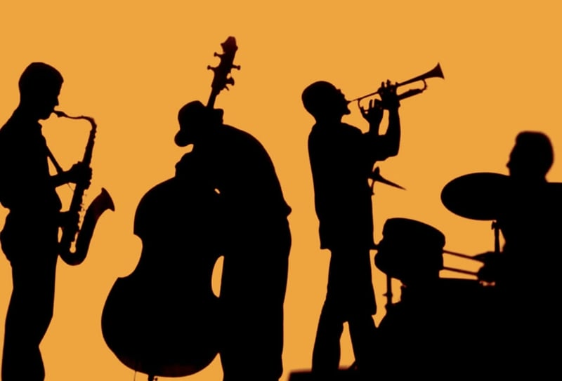

Thông tin thể loại
- Nguồn gốc Hoa Kỳ
- Thời kỳ Cuối TK XIX
- Phong cách Ngẫu hứng
- Đặc trưng Syncopation

“Jazz is not just music,
it's a way of life, a way of being.”
“What we play is life.”
Jazz là tiếng nói của tự do, của sự sáng tạo không giới hạn.
Nó được sinh ra từ nỗi đau, niềm vui, sự nổi loạn và khát vọng sống.
Trong từng nốt nhạc, nghệ sĩ không chỉ biểu diễn,
mà còn kể lại câu chuyện đời mình bằng âm thanh.